Puerta Corredera Escala 2. Puerta.png
El Mini Dungeón es un divertido juego de mazmorras como los juegos de aventuras de "Zelda". Usaremos la cámara y como controlarla, regiones para poder
entrar a otras escenas, tileset para diseñar la mazmorra, reproduciremos música ó sonidos en distintos canales de sonido para que la música de
fondo este constantemente sonando.
Para pasar de nivel tendremos que eliminar los enemigos y pisar los interruptores.
Caminara en las cuatro direcciones pulsando las flechas y disparara con la letra "Z". Y tendrá 3 vidas.
Es la bala que dispara el player.
Será el enemigo que se caminara de forma aleatoria. Y tendra 2 vidas. Aparecerán en todos lo niveles.
En mi caso tendre 3 puertas correderas ya que cada Nivel tendrá un borde distinto y tendrán que estar ocultas para que no se sepan
donde están situadas.
Las hice usando la aplicación de recortes.
Tendremos 2 clase de interruptores (Se pueden poner varios en el mismo nivel):
- Interruptor suelo que aparecera tanto en el Nivel 2 y 3.
- Interruptor torre que solo estará en el Nivel 3.
El juego consiste en que el Player tendrá que ir pasando de nivel pero para ello tiene que ir eliminado a los enemigos e ir pisando
los interruptores para que se pueda abrir la puerta que estará oculta.
En la escena debera de aparecer cuantos enemigos e interruptores hay y cada vez que se eliminen o se pisen los interruptores se restara.
La bala la dispara el Player y si da al enemigo la primera vez cambiara de color y a la segunda que le de se eliminará el enemigo.
El Juego terminara cuando ya no tengamos más vidas o cuando hallamos acabado con todos los bloques. Y pondremos una entidad de "Game Over" ó
"You Win".
Creamos un Escenario con la anchura y altura que ponga por defecto. Será la entrada para ir a los niveles.
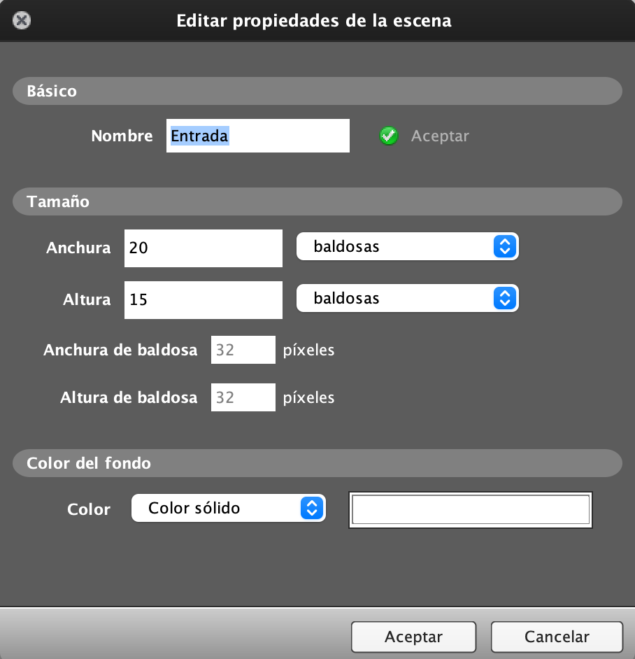
Lo primero que necesitamos son las Tiles (para poder ponerlas en el Escenario), asi que las tendremos que añadir al proyecto dentro de
Set de baldosas.
Seleccionamos el archivo "Baldosa Mazmorra1.png" y "Baldosa Mazmorra2.png". Escala la pondremos a 1.
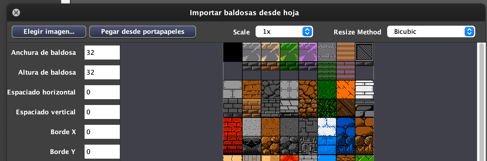
Y dibujaremos nuestro nivel. Con una salida que será de color negro para poder ir al siguiente nivel. La Escena no tendrá gravedad.
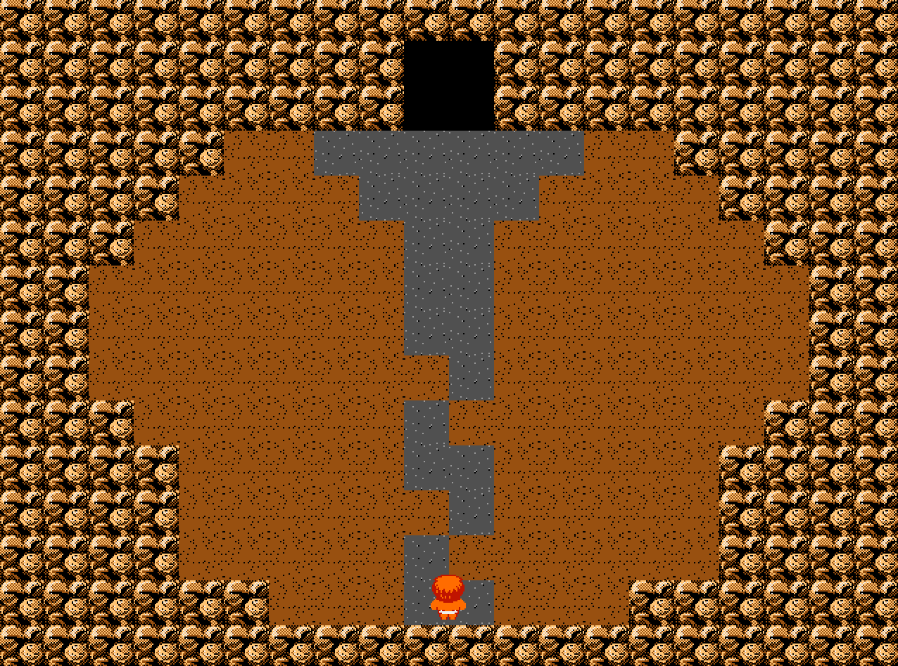
Para que el Player pueda salir al siguiente Nivel necesitaremos crear una "Región".
Para crear una Región aparece un botón en la parte izquierda. Que pone "Añadir zona (caja)". La ponemos donde nos interese y le podemos
dar un nombre.
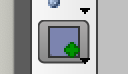
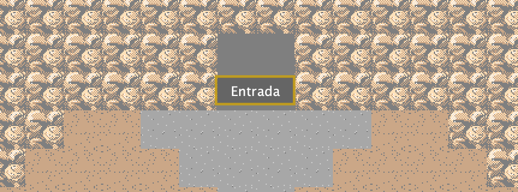
La Escena tendrá 2 Eventos:
- Created. Le ponemos la Musica de fondo en un canal para no interrupir su sonido.
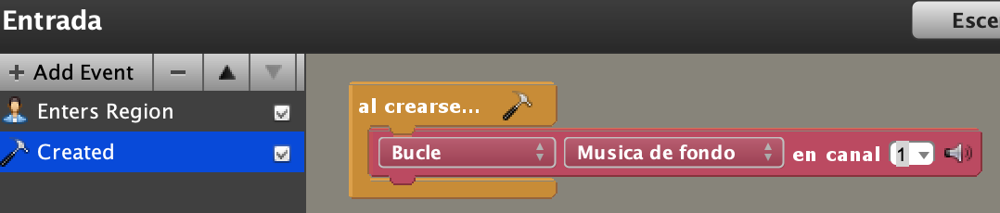
- Enters Region. Cuando el Player entre en la Región que hemos creado pasara al Nivel1 y comenzara el juego.
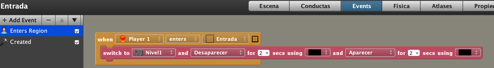
La Escena Nivel1 lo haremos más adelante. Vamos a comenzar con el Movimiento del Player y el Disparo.
El Player se movera con las flechas en las 4 direcciones cambiando de animación.
La cámara le seguira continuamente.
Si nos quedamos sin vidas aparecera una escena de Game Over que haremos mediante baldosas.
Si presionamos la tecla "Z" disparara en la dirección que nos encontremos.
Si se golpea con los Slime se le quitara una vida al Player.
Antes de comenzar tendremos que poner la Fisica. Modificaremos en principio la solapa de "General"
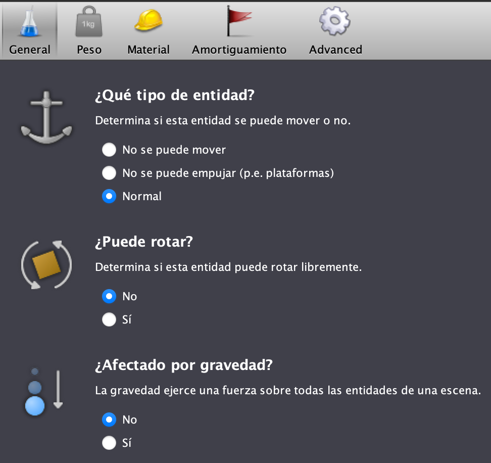
Y en Propiedades pertenecerá al grupo de los "Players".
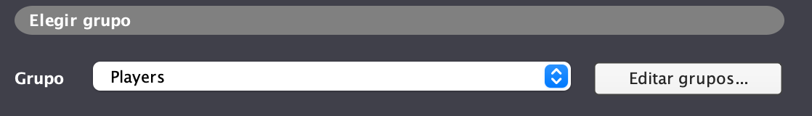
Comenzaremos con los Eventos del Player:
- Created: Lo que haremos es que la cámara se situe donde este y personaje y nos creamos una Atributo del juego "vidas" que le asignaremos
el valor de 3.

Tendremos varios Eventos de tipo Updating para tenerlo un poco más controlado. Se pueden renombrar con otro nombre.
- Updating: La cámara estará continuamente siguiendo al Player.
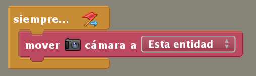
- Updating: Haremos el movimiento y el cambio de animaciones. Si no pulsamos nínguna flecha el Player se quedára quieto.

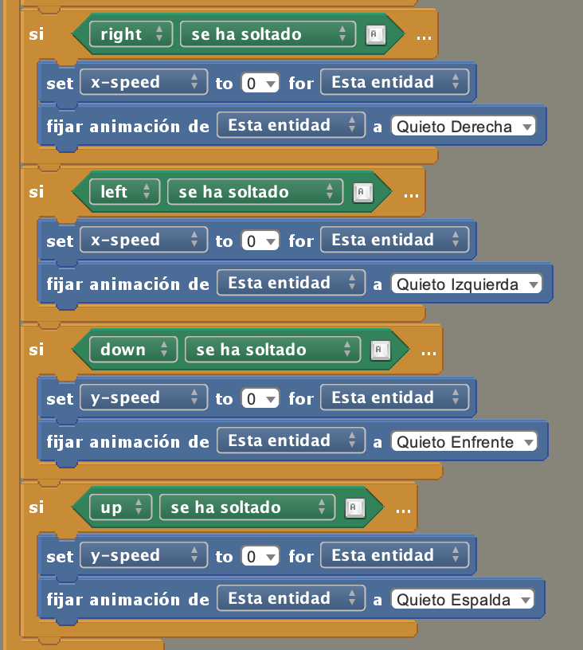
- Updating: Si ya no le quedán vidas aparecera la Escena de Game Over y pararemos todos los sonidos.
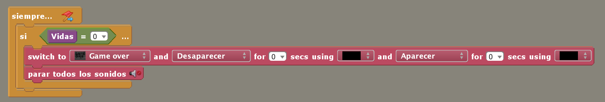
- Keyboard: Si le damos a la tecla "Z" se lanzará el disparo. Y dependiendo de que animación tenga el Player el disparo ira a una dirección u otra.

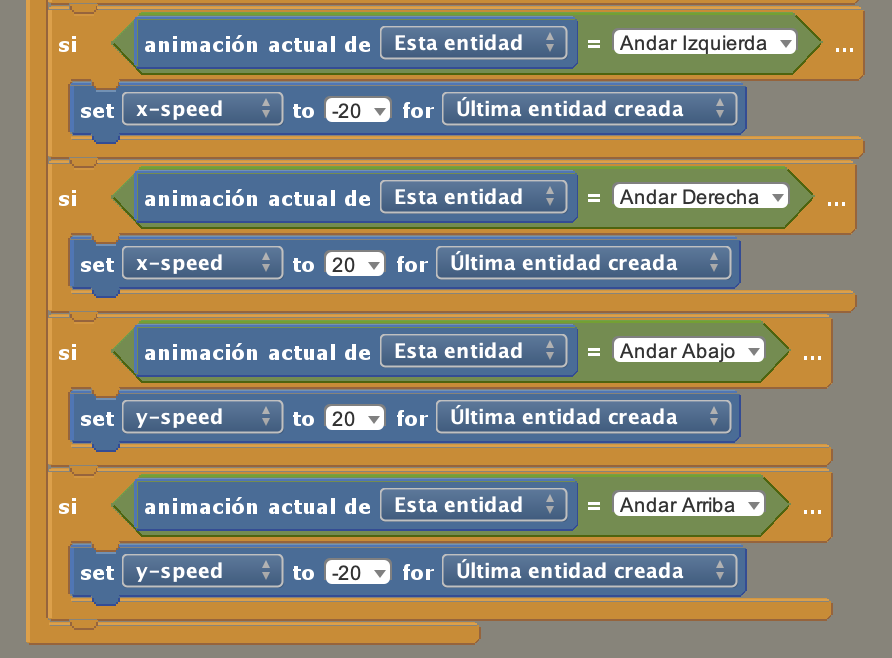
Nos faltaria hacer la colisión con las Slimes que lo haremos cuando los tengamos programados.
El Fireball aparecerá cuando le demos a la tecla "Z" e ira hacia la dirección en que se encuentre el Player (Ya lo hicimos desde el Player).
Nos faltaria hacer dos tipos de Eventos de Colisión uno con las Tiles y otro con el Grupo de colisión "Puerta de Pared". En ambos casos lo
único que hariamos es destruir el Fireball.

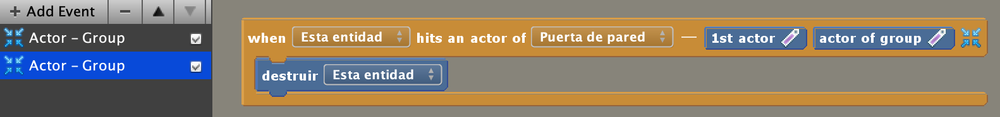